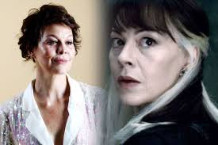

Mundo Geek HP
Destaques
Atores
Daniel Jacob RAdcliffe (Hammersmithe, Londres, 23 de julho de 1989) é um ator britânico, conhecido internacionalmente por interpretar o personagem-título na série de filmes da saga Harry potter escrita por J.K. Rowling. Fez sua primeira atuação profissional aos dez anos de idade no telefilme David Copperfild (1999) da BBC, seguido por sua primeira aparição no cimema pelo filme O Alfaiate do Panamá (2001). Aos onze anos, atuou no primeiro filme da saha Harry Potter. Por seu trabalho na série, conquistou diversos prêmios e faturou mais de 54 milhões de libras esterlinas.
Ler MaisFiguras Importantes
-

Levante suas Varinhas
Richard St. John Harris (Limerick, 1 de outubro de 1930 — Londres 25 de outubro de 2002), foi um ator, diretor teatral, cantor, compositor e escritor irlandês, que ficou popular entre o público adolescente por interpretar o Professor Albus Dumbledore em Harry Potter e a Pedra Filosofal e em sua continuação, Harry Potter e a Câmara Secreta.Richard faleceu aos 72 anos após internação para tratamento de um câncer linfático.
-
Levante suas Varinhas
Griffiths interpreta o Tio Válter, casado com Tia Petúnia, e pai de Duda Dursley, irmão de Tia Guida e tio de Harry Potter. Ele apareceu em cinco dos oito filmes da série. Sua parte foi cortada dos filmes Harry Potter e o Cálice de Fogo e Harry Potter e o enigma do Príncipe. Nascimento 31 de julho de 1947, Morte 28 de março de 2013, aos 65 anos, devido a complicações de uma cirurgia cardíaca
-
Levante suas Varinhas
Rik Mayall foi contratado para interpretar o Pirraça nos filmes de Harry Potter, mas não ficou na versão final de Pedra Filosofal: O ator gravou cenas do Poltergeist, mas o diretor Chris Columbus não gostou da aparência do personagem. A única imagem vazada de Rik no papel de Pirraça está disponível em um vídeo no Facebook. Rik Mayall faleceu em junho de 2014, aos 56 anos. Nascido em 7 de março de 1958, falecido em 9 de junho de 2014.
-
Levante suas Varinhas
Em agosto de 2015, sofreu um pequeno AVC isquêmico que levou ao diagnóstico de um câncer no pâncreas. Alan dividiu a notícia e o tratamento com apenas os amigos e familiares mais próximos. Morreu em um hospital de Londres, em 14 de janeiro de 2016, aos 69 anos. Seu corpo foi cremado em 3 de fevereiro de 2016 no Crematório de West London e suas cinzas entregue à sua esposa, Rima Horton, ex-vereadora inglesa do Partido Trabalhista no Conselho Distrital de Kensington e Chelsea, em Londres. Nascido em 21 de fevereiro de 1946, falecido em 14 de janeiro de 2016.
-
Levante suas Varinhas
Sir John Vincent Hurt CBE (Chesterfield, Derbyshire, 22 de janeiro de 1940 - 25 de janeiro de 2017) foi um ator britânico que interpretou Garrick Olivaras. Morreu em 25 de janeiro de 2017, por complicação de um câncer de pâncreas.
-
Levante suas Varinhas
Verne Jay Troyer (Sturgis, 1 de janeiro de 1969 – Los Angeles, 21 de abril de 2018) foi um ator americano conhecido por interpretar Mini-Me no filme Austin Powers, além dos filmes Homens de Preto, Harry Potter e outras séries e comédias. Verne era portador de acondroplasia, pan-hipopituitarismo, condição genética que provoca nanismo, por isso media 81 cm. Seu falecimento decorreu da consequências do alcoolismo e depressão
-

Levante suas Varinhas
Na franquia de Harry Potter, viveu a bruxa puro-sangue Narcissa Malfoy, mãe de Draco Malfoy, nos filmes "Harry Potter e o Enigma do Príncipe", "Harry Potter e as Relíquias da Morte - Parte 1" e "Harry Potter e as Relíquias da Morte - Parte 2". A atriz Helen McCrory, conhecida por papéis na série "Peaky Blinders" e na franquia "Harry Potter", morreu sexta-feira 16 de abril de 2021, aos 52 anos, após lutar contra um câncer, anunciou o marido, o ator Damian Lewis.
-
Levante suas Varinhas
Anthony Robert McMillan OBE (Rutherglen, 30 de março de 1950 — Larbert, 14 de outubro de 2022), mais conhecido pelo nome artístico Robbie Coltrane, foi um ator, comediante e escritor escocês. Tornou-se mundialmente famoso por seu papel como Rúbeo Hagrid na série de filmes Harry Potter. (Rutherglen, Reino Unido 30 de março de 1950 - Forth Valley, 14 de outubro de 2022).
-
Levante suas Varinhas
Gambon assumiu o papel após a morte de Richard Harris, que interpretou Dumbledore nos dois primeiros filmes. A morte de Harris foi causada por câncer linfático. Michael Gambon foi um ator irlandês-britânico que teve uma carreira de seis décadas no cinema, na televisão, no teatro e no rádio. Ele ganhou diversos prêmios no Reino Unido e foi condecorado cavaleiro pela rainha Elizabeth II. Gambon morreu aos 82 anos, em 28 de setembro de 2023, em decorrência de uma pneumonia.
-
Margaret Natalie "Maggie" Smith CH DBE (Ilford, 28 de dezembro de 1934 – Londres, 27 de setembro de 2024) foi uma atriz britânica. Com uma extensa carreira no teatro, cinema e televisão, apareceu em mais de 60 filmes e mais de 70 peças, sendo uma das atrizes mais reconhecidas da Grã-Bretanha. Recebeu o título de Dama da Ordem do Império Britânico em 1990, e em 2014 recebeu a Ordem dos Companheiros de Honra por serviços prestados ao teatro. A atriz interpretou, na série Harry Potter, o papel de Minerva McGonagall, vice-diretora de Hogwarts, professora de transfiguração e chefe da casa Grifinória. Ganhou dois Oscar e recebeu outras indicações, ao Globo de Ouro e ao BAFTA, pelo seu papel no filme de Robert Altman, Assassinato em Gosford Park.
Principal
Harry Potter
Harry Potter é uma série de sete romances de fantasia escrita pela autora britânica J. K. Rowling. A série narra as aventuras de um jovem chamado Harry James Potter, que descobre aos 11 anos de idade que é um bruxo ao ser convidado para estudar na Escola de Magia e Bruxaria de Hogwarts.
Leia MaisPersonagens Marcantes
-
Albus Dumbledore
O Prof. Albus Percival Wulfric Brian Dumbledore é um personagem fictício da série Harry Potter, de J. K. Rowling. Durante a maior parte da série, ele é o diretor da escola de magia Hogwarts
-
Lord Voldermort
Voldemort, um apelido anagramático para Tom Marvolo Riddle (Tom Servolo Riddle, no Brasil), é o arqui-inimigo de Harry Potter, que, de acordo com uma profecia, tem "o poder de derrotar o Lord das Trevas".
-
Severo Snape
Severus Snape é um personagem fictício da série Harry Potter, da autora J. K. Rowling. Na tradução brasileira recebeu o nome de Severo Snape. Ele é caracterizado como uma pessoa de grande complexidade, cujo exterior controlado e friamente sarcástico oculta angústia e emoções profundas.
-
Rúbeo Hagrid
Rubeus Hagrid é um personagem fictício da série de romances Harry Potter de J. K. Rowling. Ele foi apresentado em Harry Potter e a Pedra Filosofal como um meio-gigante que é o guarda-caça e zelador da escola de magia de Hogwarts.
-
Hermione Granger
Hermione Jean Granger é uma personagem fictícia na série Harry Potter de J. K. Rowling. Aparece pela primeira vez em Harry Potter e a Pedra Filosofal, como uma nova estudante em direção a Hogwarts.
-
Ronald Weasley
Ronald Bilius Weasley é um personagem ficcional do mundo de Harry Potter, criado por J. K. Rowling. Na tradução brasileira recebeu o nome completo de Ronald Abílio Weasley
-
Sirius Black
Sirius Black é um personagem fictício da série de romances Harry Potter de J. K. Rowling. Sirius foi mencionado brevemente pela primeira vez em Harry Potter e a Pedra Filosofal como um bruxo que emprestou a Rubeus Hagrid uma motocicleta voadora logo depois que Lord Voldemort matou James e Lily Potter.